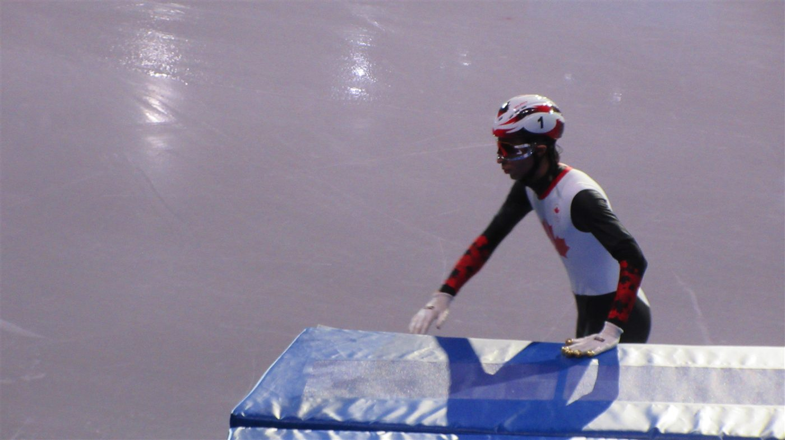
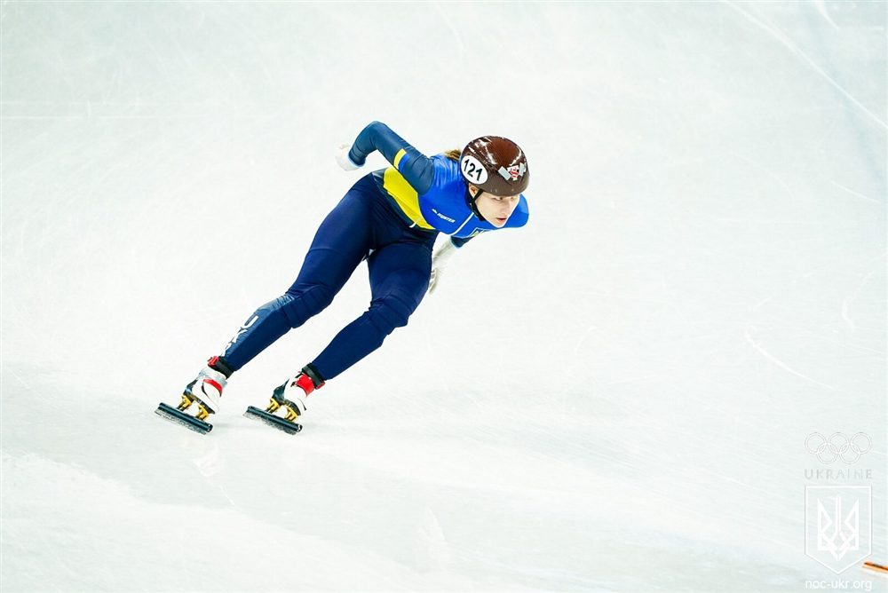
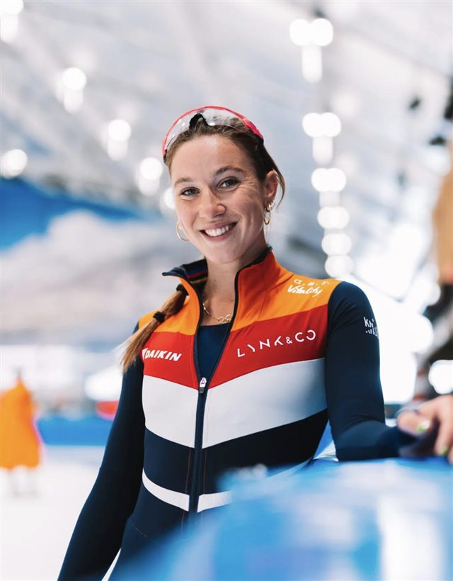
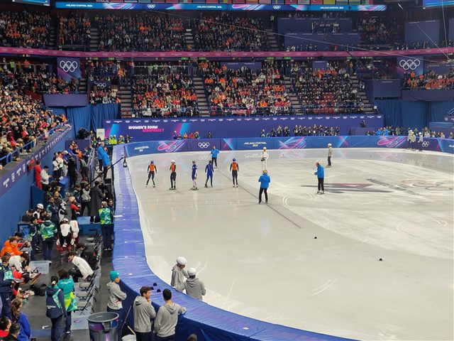
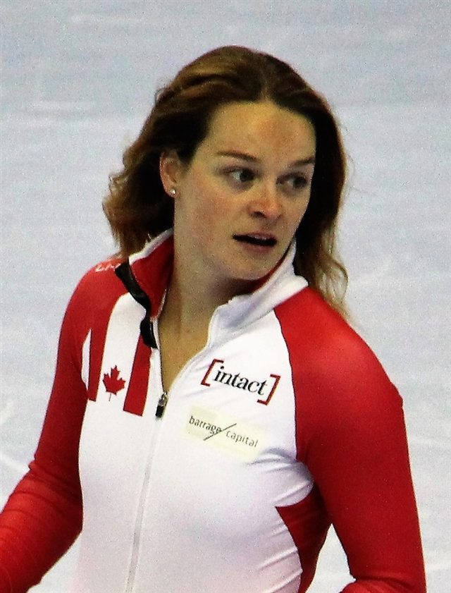
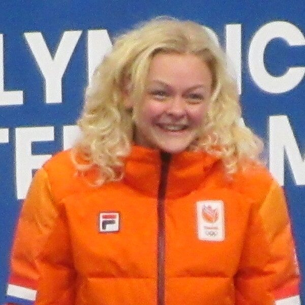

La piste
Un anneau de 111,12 m tracé sur une patinoire de hockey, avec des plots comme repères de virage.

111 m
Tour de piste
50 km/h
Vitesse de pointe
4-6
Patineurs par série
Le short track, c'est le patinage de vitesse version peloton : quatre à six patineurs s'élancent ensemble sur une petite piste de 111 mètres, et le premier sur la ligne l'emporte. Fini le chrono : ici, c'est la course directe, avec dépassements, frôlements et chutes spectaculaires.
Penchés à l'extrême dans des virages serrés, la main posée sur la glace, les patineurs jouent autant la tactique que la vitesse. Le moindre contact irrégulier ou changement de trajectoire dangereux est sanctionné d'une pénalité par les arbitres.
Le Canadien Charles Hamelin, multiple champion olympique, et la Néerlandaise Suzanne Schulting comptent parmi les grandes figures du circuit.

Un anneau de 111,12 m tracé sur une patinoire de hockey, avec des plots comme repères de virage.
On court les uns contre les autres : le classement se fait à l'arrivée, pas au chrono.
Doubler est autorisé, mais c'est au dépassant de le faire proprement, sans gêner l'adversaire.
Contact irrégulier, coupe de trajectoire ou poussée : l'arbitre peut disqualifier sur l'instant.
Les relayeurs se transmettent l'élan d'une poussée dans le dos, en plein peloton.
C'est la pointe de la lame, tendue vers l'avant, qui franchit la ligne et départage les sprinteurs.
Lieu
Mediolanum Forum, Assago — Milan
Capacité
≈ 12 700 places
Accès
Métro M2 — Assago Milanofiori Forum. Navette officielle depuis le Duomo.
Billet
À partir de 35 € · 130 € (finales relais)
Ambiance
L'épreuve la plus imprévisible des Jeux : rebondissements et chutes jusqu'à la ligne.


 États-Unis
États-Unis
 Canada
Canada
Canada